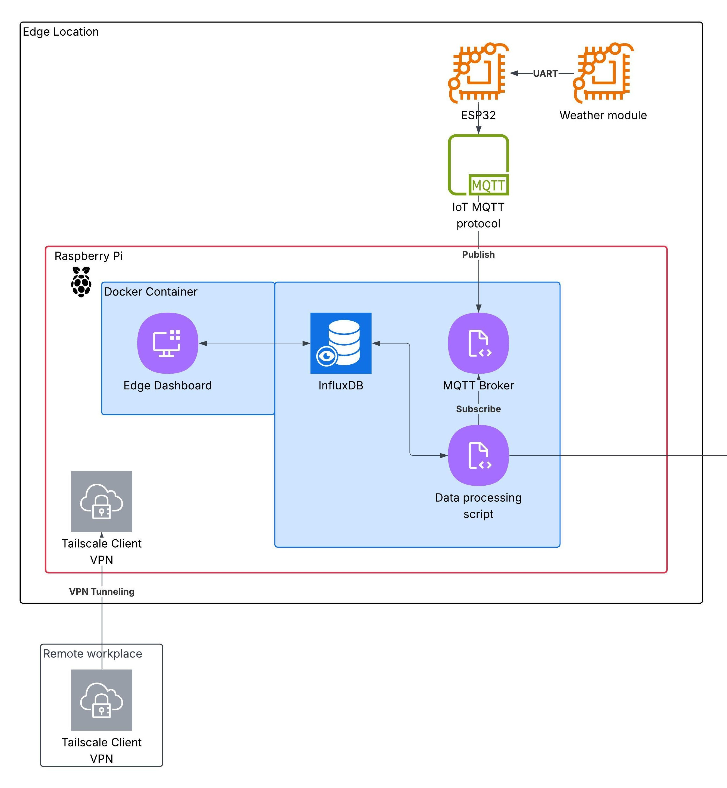
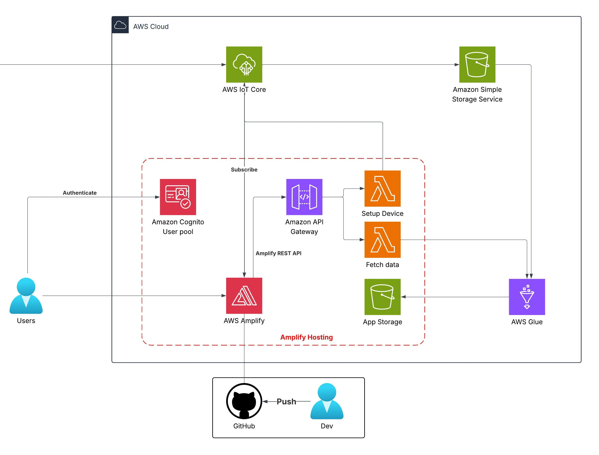

Bảng đề xuất
Tại phần nà y, bạn cần tóm tắt các ná»™i dung trong workshop mà bạn dá»± tÃnh sẽ là m.
Giải pháp AWS Serverless hợp nhất cho giám sát thá»i tiết thá»i gian thá»±c
1. Tóm tắt Ä‘iá»u hà nh
IoT Weather Platform được thiết kế dà nh cho nhóm ITea Lab tại TP. Hồ Chà Minh nhằm nâng cao khả năng thu tháºp và phân tÃch dữ liệu thá»i tiết. Ná»n tảng há»— trợ tối Ä‘a 5 trạm thá»i tiết, có khả năng mở rá»™ng lên 10–15 trạm, sá» dụng thiết bị biên Raspberry Pi kết hợp cảm biến ESP32 để truyá»n dữ liệu qua MQTT. Ná»n tảng táºn dụng các dịch vụ AWS Serverless để cung cấp giám sát thá»i gian thá»±c, phân tÃch dá»± Ä‘oán và tiết kiệm chi phÃ, vá»›i quyá»n truy cáºp giá»›i hạn cho 5 thà nh viên phòng lab thông qua Amazon Cognito.
2. Tuyên bố vấn Ä‘á»
Vấn đỠhiện tại
Các trạm thá»i tiết hiện tại yêu cầu thu tháºp dữ liệu thủ công, khó quản lý khi có nhiá»u trạm. Không có hệ thống táºp trung cho dữ liệu hoặc phân tÃch thá»i gian thá»±c, và các ná»n tảng bên thứ ba thÆ°á»ng tốn kém và quá phức tạp.
Giải pháp
Ná»n tảng sá» dụng AWS IoT Core để tiếp nháºn dữ liệu MQTT, AWS Lambda và API Gateway để xá» lý, Amazon S3 để lÆ°u trữ (bao gồm data lake), và AWS Glue Crawlers cùng các tác vụ ETL để trÃch xuất, chuyển đổi, tải dữ liệu từ S3 data lake sang má»™t S3 bucket khác để phân tÃch. AWS Amplify vá»›i Next.js cung cấp giao diện web, và Amazon Cognito đảm bảo quyá»n truy cáºp an toà n. TÆ°Æ¡ng tá»± nhÆ° Thingsboard và CoreIoT, ngÆ°á»i dùng có thể đăng ký thiết bị má»›i và quản lý kết nối, nhÆ°ng ná»n tảng nà y hoạt Ä‘á»™ng ở quy mô nhá» hÆ¡n và phục vụ mục Ä‘Ãch sá» dụng ná»™i bá»™. Các tÃnh năng chÃnh bao gồm bảng Ä‘iá»u khiển thá»i gian thá»±c, phân tÃch xu hÆ°á»›ng và chi phà váºn hà nh thấp.
Lợi Ãch và hoà n vốn đầu tÆ° (ROI)
Giải pháp tạo ná»n tảng cÆ¡ bản để các thà nh viên phòng lab phát triển má»™t ná»n tảng IoT lá»›n hÆ¡n, đồng thá»i cung cấp nguồn dữ liệu cho những ngÆ°á»i nghiên cứu AI phục vụ huấn luyện mô hình hoặc phân tÃch. Ná»n tảng giảm bá»›t báo cáo thủ công cho từng trạm thông qua hệ thống táºp trung, Ä‘Æ¡n giản hóa quản lý và bảo trì, đồng thá»i cải thiện Ä‘á»™ tin cáºy dữ liệu. Chi phà hà ng tháng Æ°á»›c tÃnh 0,66 USD (theo AWS Pricing Calculator), tổng cá»™ng 7,92 USD cho 12 tháng. Tất cả thiết bị IoT đã được trang bị từ hệ thống trạm thá»i tiết hiện tại, không phát sinh chi phà phát triển thêm. Thá»i gian hoà n vốn 6–12 tháng nhá» tiết kiệm đáng kể thá»i gian thao tác thủ công.
3. Kiến trúc giải pháp
Ná»n tảng áp dụng kiến trúc AWS Serverless để quản lý dữ liệu từ 5 trạm dá»±a trên Raspberry Pi, có thể mở rá»™ng lên 15 trạm. Dữ liệu được tiếp nháºn qua AWS IoT Core, lÆ°u trữ trong S3 data lake và xá» lý bởi AWS Glue Crawlers và ETL jobs để chuyển đổi và tải và o má»™t S3 bucket khác cho mục Ä‘Ãch phân tÃch. Lambda và API Gateway xá» lý bổ sung, trong khi Amplify vá»›i Next.js cung cấp bảng Ä‘iá»u khiển được bảo máºt bởi Cognito.


Dịch vụ AWS sỠdụng
- AWS IoT Core: Tiếp nháºn dữ liệu MQTT từ 5 trạm, mở rá»™ng lên 15.
- AWS Lambda: Xá» lý dữ liệu và kÃch hoạt Glue jobs (2 hà m).
- Amazon API Gateway: Giao tiếp với ứng dụng web.
- Amazon S3: Lưu trữ dữ liệu thô (data lake) và dữ liệu đã xỠlý (2 bucket).
- AWS Glue: Crawlers láºp chỉ mục dữ liệu, ETL jobs chuyển đổi và tải dữ liệu.
- AWS Amplify: Lưu trữ giao diện web Next.js.
- Amazon Cognito: Quản lý quyá»n truy cáºp cho ngÆ°á»i dùng phòng lab.
Thiết kế thà nh phần
- Thiết bị biên: Raspberry Pi thu tháºp và lá»c dữ liệu cảm biến, gá»i tá»›i IoT Core.
- Tiếp nháºn dữ liệu: AWS IoT Core nháºn tin nhắn MQTT từ thiết bị biên.
- Lưu trữ dữ liệu: Dữ liệu thô lưu trong S3 data lake; dữ liệu đã xỠlý lưu ở một S3 bucket khác.
- Xá» lý dữ liệu: AWS Glue Crawlers láºp chỉ mục dữ liệu; ETL jobs chuyển đổi để phân tÃch.
- Giao diện web: AWS Amplify lÆ°u trữ ứng dụng Next.js cho bảng Ä‘iá»u khiển và phân tÃch thá»i gian thá»±c.
- Quản lý ngÆ°á»i dùng: Amazon Cognito giá»›i hạn 5 tà i khoản hoạt Ä‘á»™ng.
4. Triển khai kỹ thuáºt
Các giai đoạn triển khai
Dá»± án gồm 2 phần — thiết láºp trạm thá»i tiết biên và xây dá»±ng ná»n tảng thá»i tiết — má»—i phần trải qua 4 giai Ä‘oạn:
- Nghiên cứu và vẽ kiến trúc: Nghiên cứu Raspberry Pi vá»›i cảm biến ESP32 và thiết kế kiến trúc AWS Serverless (1 tháng trÆ°á»›c kỳ thá»±c táºp).
- TÃnh toán chi phà và kiểm tra tÃnh khả thi: Sá» dụng AWS Pricing Calculator để Æ°á»›c tÃnh và điá»u chỉnh (Tháng 1).
- Äiá»u chỉnh kiến trúc để tối Æ°u chi phÃ/giải pháp: Tinh chỉnh (và dụ tối Æ°u Lambda vá»›i Next.js) để đảm bảo hiệu quả (Tháng 2).
- Phát triển, kiểm thá», triển khai: Láºp trình Raspberry Pi, AWS services vá»›i CDK/SDK và ứng dụng Next.js, sau đó kiểm thá» và đưa và o váºn hà nh (Tháng 2–3).
Yêu cầu kỹ thuáºt
- Trạm thá»i tiết biên: Cảm biến (nhiệt Ä‘á»™, Ä‘á»™ ẩm, lượng mÆ°a, tốc Ä‘á»™ gió), vi Ä‘iá»u khiển ESP32, Raspberry Pi là m thiết bị biên. Raspberry Pi chạy Raspbian, sá» dụng Docker để lá»c dữ liệu và gá»i 1 MB/ngà y/trạm qua MQTT qua Wi-Fi.
- Ná»n tảng thá»i tiết: Kiến thức thá»±c tế vá» AWS Amplify (lÆ°u trữ Next.js), Lambda (giảm thiểu do Next.js xá» lý), AWS Glue (ETL), S3 (2 bucket), IoT Core (gateway và rules), và Cognito (5 ngÆ°á»i dùng). Sá» dụng AWS CDK/SDK để láºp trình (và dụ IoT Core rules tá»›i S3). Next.js giúp giảm tải Lambda cho ứng dụng web fullstack.
5. Lộ trình & Mốc triển khai
- TrÆ°á»›c thá»±c táºp (Tháng 0): 1 tháng lên kế hoạch và đánh giá trạm cÅ©.
- Thá»±c táºp (Tháng 1–3):
- Tháng 1: Há»c AWS và nâng cấp phần cứng.
- Tháng 2: Thiết kế và điá»u chỉnh kiến trúc.
- Tháng 3: Triển khai, kiểm thá», Ä‘Æ°a và o sá» dụng.
- Sau triển khai: Nghiên cứu thêm trong vòng 1 năm.
6. Ước tÃnh ngân sách
Có thể xem chi phà trên AWS Pricing Calculator
Hoặc tải tệp Æ°á»›c tÃnh ngân sách.
Chi phà hạ tầng
- AWS Lambda: 0,00 USD/tháng (1.000 request, 512 MB lưu trữ).
- S3 Standard: 0,15 USD/tháng (6 GB, 2.100 request, 1 GB quét).
- Truyá»n dữ liệu: 0,02 USD/tháng (1 GB và o, 1 GB ra).
- AWS Amplify: 0,35 USD/tháng (256 MB, request 500 ms).
- Amazon API Gateway: 0,01 USD/tháng (2.000 request).
- AWS Glue ETL Jobs: 0,02 USD/tháng (2 DPU).
- AWS Glue Crawlers: 0,07 USD/tháng (1 crawler).
- MQTT (IoT Core): 0,08 USD/tháng (5 thiết bị, 45.000 tin nhắn).
Tổng: 0,7 USD/tháng, 8,40 USD/12 tháng
- Phần cứng: 265 USD một lần (Raspberry Pi 5 và cảm biến).
7. Äánh giá rủi ro
Ma tráºn rủi ro
- Mất mạng: Ảnh hưởng trung bình, xác suất trung bình.
- Há»ng cảm biến: Ảnh hưởng cao, xác suất thấp.
- Vượt ngân sách: Ảnh hưởng trung bình, xác suất thấp.
Chiến lược giảm thiểu
- Mạng: Lưu trữ cục bộ trên Raspberry Pi với Docker.
- Cảm biến: Kiểm tra định kỳ, dự phòng linh kiện.
- Chi phÃ: Cảnh báo ngân sách AWS, tối Æ°u dịch vụ.
Kế hoạch dự phòng
- Quay lại thu tháºp thủ công nếu AWS gặp sá»± cố.
- Sá» dụng CloudFormation để khôi phục cấu hình liên quan đến chi phÃ.
8. Kết quả kỳ vá»ng
Cải tiến kỹ thuáºt: Dữ liệu và phân tÃch thá»i gian thá»±c thay thế quy trình thủ công. Có thể mở rá»™ng tá»›i 10–15 trạm.
Giá trị dà i hạn: Ná»n tảng dữ liệu 1 năm cho nghiên cứu AI, có thể tái sá» dụng cho các dự án tÆ°Æ¡ng lai.